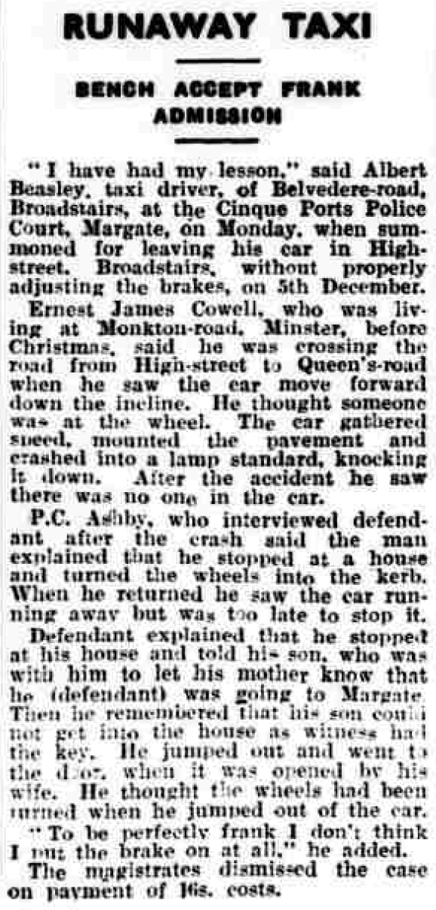
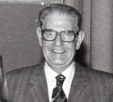

Ernest James Cowell 1916 - c1985
[ Home ] | [ Calendar ] | [ Surnames Index ] | [ Errors ] | [ Family History ]The child of Alfred Cowell and Fanny Austen, Ernest Cowell, the first cousin once-removed on the mother's side of Nigel Horne, was born in Minster, Thanet, Kent, England on 23 May 19161,2,3,4 and was married 3 times - to Irene Marshall (c. May 1937 in Thanet, Kent, England) Isabella Briscombe Marian Hawley (c. Aug 1948 in Middleton, Lancashire, England)5. He had 2 children: Ann L P with Irene M, and one surviving child. Like his father, he was a transport driver.
During his life, he was living at Durlock Farm Cottages, Minster in Thanet on 19 Jun 19211; and at Shelley, Monkton Road, Minster in Thanet on 29 Sept 19392.
He died c. Nov 1985 in Oldham, Lancashire, England3.
Parents
- Alfred John was born on 8 May 1880
- Fanny was born c. May 1883
Children
- Ann L P was born on 14 Mar 1939
Citations
- 1921 Census Of England & Wales - Findmypast (was age 5 and the son of the head of the household)
- 1939 Register - Findmypast (was the head of the household)
- England & Wales deaths 1837-2007 - Findmypast
- England & Wales, Birth Index: 1916-2005 Online publication - Provo, UT, USA: The Generations Network, Inc., 2008.Original data - General Register Office. England and Wales Civil Registration Indexes. London, England: General Register Office. © Crown copyright. Published by permission of the Cont
- England & Wales, Marriage Index: 1916-2005 Online publication - Provo, UT, USA: The Generations Network, Inc., 2009.Original data - General Register Office. England and Wales Civil Registration Indexes. London, England: General Register Office. © Crown copyright. Published by permission of the Cont
Media
Ernest James Cowell
Thanet Advertiser 14 Jan 1938

Ernest James Cowell - 2
Ernest Cowell - 3

England & Wales marriages 1837-2008 - BMD/M/1937/2/AZ/000243/115
England & Wales births 1837-2006 - BMD/B/1916/2/AZ/000310/112
1939 Register Transcription - TNA-R39-1820-1820E-019-34
England & Wales deaths 1837-2007 - BMD/D/1985/12/74842200
Family Tree
Map
Generated by ged2site. Last updated on Jul 3, 2024